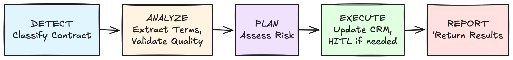

Architectural Debt: The AI tax you're already payingArchitecturalDebt:TheAItaxyou'realreadypayingArchitecturalDebt:TheAItaxyou'realreadypaying
Nearform
3rd of November, 2025
Share
Without modernization, you're not "adding AI" to your systems; you're accumulating architectural debt. The question isn't whether to modernize. It's how: how do you add workflow scoped context to your existing patterns?
Enterprises are racing to integrate AI into legacy applications, but there's a problem. Legacy architectures were designed for fast, predictable operations, not for what AI really does: processes that span multiple steps, expensive calls that need cost tracking, outputs you can't always predict, and decisions that often need human review. Without modernization, you're not "adding AI" to your systems; you're accumulating architectural debt. The question isn't whether to modernize. It's how: how do you add workflow scoped context to your existing patterns?
The problem
Enterprises bolt AI onto legacy systems and immediately hit a fundamental mismatch. The issue isn't that these systems lack capabilities. It's that their patterns work at the wrong scope.
What's the mismatch? Your systems handle multistep processes but you built the coordination yourself with orchestrator code, state machines, message queues, etc. That works when operations are fast and cheap. AI's changing the economics. Operations now cost real money and take seconds. Can your systems track what workflow ABC123 cost across 5 steps and 3 days? Sure, with custom instrumentation: correlation IDs, aggregation logic, cost attribution. But you're rebuilding that per workflow.
Then there's variability. AI results don't stay consistent, and deciding what to do needs workflow context. Retry with the same model? Fall back to a cheaper one? Route to a human for review? That decision needs to know what happened in previous steps, the cost, and the priority.
The scope problem shows up in what you have to build. Your retry logic handles API calls natively. For workflow decisions like 'retry step 3 or restart?' you built custom orchestrator code. Your observability tracks services natively. For workflow history? You need correlation IDs and aggregation logic. It's infrastructure work you're rebuilding per workflow, not just business logic.
So you're recreating the same infrastructure at the wrong scope with each AI integration. The better approach? Add workflow scoped context to your existing patterns once, then reuse it across all AI workflows.
Before you can do that, you need to recognize what architectural debt looks like. There are 4 patterns that consistently accumulate when AI meets legacy architecture.
The 4 types of architectural debt AI exposes
Each type of architectural debt represents a specific mismatch between legacy system assumptions and AI characteristics, and each one blocks multiple AI use cases until addressed.
The four architecture debts we’ve observed are:
Integration debt - Where to route (which queue, which provider)
Reliability debt - What to do when things fail, when to retry, how to degrade gracefully
Visibility debt - What happened across the entire workflow, why decisions were made
Process Coordination debt - Orchestrating complex workflows with state management
Your adapter patterns work at request scope, which worked until AI workflows needed routing based on workflow context. API gateways route based on headers, service proxies select backends by load. But AI needs routing like "We've spent $n already, route remaining steps to cheaper models" or "This is attempt 3, escalate to a more capable model.”
Can you build this? Yes, with custom orchestrator code. You store workflow context in external state storage (cost so far, retry attempts, priority level), query it to make routing decisions, and publish to different message queues like GPU-workers or CPU-workers. You wait for results, update context, and handle crash recovery when things fail. That's state management, correlation IDs, queue routing, and failure recovery you're building and maintaining. It's workflow infrastructure you rebuild per workflow.
AI workflows need routing with durable context. Your workflow maintains variables like cost and retries, then picks task queues based on that state. Different workers poll different queues with different AI implementations. Context persists automatically, no external state storage to manage.
Your retry patterns work at request scope, which worked until AI made the economics intolerable. Circuit breakers and retry libraries handle request failures well. But when step 3 of 5 fails in an AI workflow, restarting from step 1 wastes expensive completed work. When rate limited, simple retry burns through attempts. You need retry logic based on workflow context: "Steps 1 and 2 completed, wait and retry step 3" not "restart and waste work.”
You can build this with custom infrastructure. Async job queues pause and resume workflows while databases store retry state like steps completed, costs, and attempt counters. You handle crash recovery when workers die by resuming from saved state, and query history to decide whether to retry the current step or restart from the beginning. That's workflow resilience infrastructure you rebuild for each workflow.
AI workflows need durable resilience at workflow scope. Retry logic accesses context like steps completed and costs. When step 3 fails, the workflow knows prior steps completed. It waits for rate limits, retries the failed step, and escalates if needed.
3. Visibility Debt: Request Scoped Observability → Workflow Scoped History
Your observability works at request scope, which worked until AI workflows needed process level visibility. You've got logs for each service call, metrics per endpoint, distributed traces per request. But AI workflows need different answers: "What did workflow ABC123 cost?" or "Why was this document routed to manual review?" Answering those workflow scoped questions from request scoped logs means building aggregation infrastructure.
Enterprises solve this by building custom aggregation infrastructure. You tag logs with correlation IDs and aggregate them in observability platforms to reconstruct workflows. You build dashboards to sum costs and stitch service logs together for audits, dealing with different log formats, lost correlation IDs, and manual timeline reconstruction. That's workflow visibility infrastructure you rebuild for every process type.
AI workflows need observability at workflow scope. Complete execution history captures every step, decision, and timing automatically. When auditors ask why AI decided something, you replay the workflow instead of querying scattered logs. History is built in, not reconstructed from service logs.
4. Process Coordination Debt: Manual Coordination → Durable Workflow Execution
Your process coordination is assembled from primitives like status columns, orchestrator services, and queue messages. This works for simple workflows, but complex workflows add orchestration maintenance burden. Multi step processes with human approvals, parallel execution with result merging, and long-running operations that span days all require custom coordination logic. AI workflows can start simple but evolve into this complexity as you add validation steps, human oversight for AI safety, and multi-model strategies. The coordination infrastructure you built requires ongoing maintenance.
Teams assemble orchestration from primitives, using database columns to track where you are while custom orchestrator code determines what's next and message queues coordinate steps. When processes grow complex with more steps, more branching, and longer duration, you maintain the orchestration infrastructure alongside the business logic. You handle state tracking, step coordination, and pause and resume logic as part of your codebase.
Complex workflows need orchestration as platform infrastructure. The platform handles state tracking, coordinates sequential and parallel steps, and manages long pauses automatically. You write business logic while orchestration infrastructure is provided.
Addressing the debt: workflow orchestration primitives
These four debt types share a pattern: you're rebuilding workflow infrastructure per workflow because your existing patterns operate at request scope. What does assembling this yourself actually mean? You're maintaining correlation ID systems across services, building state persistence and recovery logic, writing custom retry orchestrators that understand workflow context, and creating aggregation infrastructure to reconstruct workflow history. Each debt type represents infrastructure you build and maintain per workflow pattern, not just business logic.
Temporal provides proven workflow orchestration at enterprise scale. Netflix, Stripe, and Coinbase run production systems on Temporal, handling complex workflows at high volume. This isn't experimental technology; it's infrastructure powering critical business processes at companies where reliability isn't negotiable.
Temporal's foundation is durable execution, your code runs to completion no matter what. Workflow state persists automatically through event history. Every workflow step generates events that become the permanent record. When failures occur, Temporal reconstructs workflow state by replaying these events, rebuilding exactly where you were without querying external databases. This architectural approach is why state management, retry logic, coordination, and visibility work at workflow scope natively.
How does durable execution address each debt pattern specifically. Each requires different primitives operating at workflow scope.
Integration debt —> Task queues and workflow context
Task queues combined with workflow variables provide routing at workflow scope. Your workflow code maintains context like cost accumulated and priority level as regular variables, then selects which task queue to use based on that state. Different worker pools poll different task queues, each running your different AI provider implementations. A high-priority workflow with low accumulated cost routes to the GPU-workers queue where premium model implementations run, while workflows that exceed budget thresholds route to CPU-workers with cost-optimized implementations.
Reliability debt —> Declarative retry and deterministic replay
When step 3 of 5 fails, you need to know steps 1 and 2 are already completed. Declarative retry policies let you define retry behavior in workflow code while Temporal's server manages retry state. Deterministic replay reconstructs workflow state from event history, so the workflow knows exactly which steps completed before the failure. If step 3 hits a rate limit, the workflow's retry policy waits for the backoff period while steps 1 and 2 remain preserved in event history, then retries step 3 without rerunning expensive completed work.
Visibility debt —> Event sourcing and workflow history
Complete execution history provides provenance, built in not reconstructed. Event sourcing captures every workflow step, decision, timing, and state transition automatically. When you need to answer "What did workflow ABC123 cost across 5 steps?" you have the complete activity history to calculate from, or "Why did AI route this to manual review?" you replay the decision logic. For debugging, you replay workflows to see inputs, outputs, and decisions at each step.
Process coordination debt —> Durable execution and signals
Durable execution makes process state automatic. Workflows can pause indefinitely awaiting Durable execution makes the process state automatic. Workflows can pause indefinitely awaiting external input and resume when signals arrive from humans, other agents, or external services. When step 3 fails, Temporal knows steps 1 and 2 completed through event history and can resume from exactly that point. An approval workflow pauses for two days awaiting human input, and when the approval signal arrives, it resumes with complete workflow context preserved. This signal primitive enables human in the loop (HITL) patterns for AI safety guardrails, and can support multi agent coordination and event driven workflows.
Putting it together: contract review
These primitives work together in practice. The following workflow demonstrates how a single AI application addresses all four debt types using Temporal's orchestration infrastructure.
Enterprise legal teams process contracts at scale, but their existing systems weren't built for AI workflows. When you bolt AI onto these systems for classification and term extraction, architectural debt accumulates. Your document queues, CRM integrations, and approval processes assume fast, predictable operations. AI workflows need different infrastructure. This workflow illustrates how Temporal primitives address each debt type: classifying incoming agreements, extracting legal terms using AI, assessing risk, and routing high risk contracts to legal review before updating the CRM.
Adding AI to legacy infrastructure creates architectural debt. The code below illustrates how workflow orchestration addresses that debt at the platform level. In Temporal, workflows contain your orchestration logic while activities contain your business logic. Each activity (classify_contract, extract_legal_terms, assess_risk) would wrap an AI agent that integrates with your chosen LLM provider. These agents could use tools via MCP or direct integrations for database queries, policy document retrieval, and validation APIs. Activities isolate execution context, so each agent receives only necessary inputs without inheriting bloated context from prior steps. Our focus is on orchestration, how Temporal coordinates agents, routes based on workflow state, handles failures, and provides visibility. Agent implementations and their tool integrations are outside the scope of this orchestration example.
DAPER flow: contract review workflow

from datetime import timedelta
from temporalio import workflow
from temporalio.common import RetryPolicy
# Activities: classify_contract, extract_legal_terms, validate_extraction_quality,# assess_risk, update_crm - each would integrate with your LLM provider@workflow.defnclassContractReviewWorkflow:def__init__(self): self.legal_approved =False# Signal state for HITL@workflow.runasyncdefrun(self, contract_id:str): total_cost =0.0# Track workflow-scoped costs across activities# DAPER Stage: Detect & Classify# Integration Debt: Task queue routing | Docs: <https://docs.temporal.io/workers#task-queues> classification =await workflow.execute_activity( classify_contract, contract_id, task_queue="cpu-workers",# Route to cheap model for classification start_to_close_timeout=timedelta(minutes=2),)# DAPER Stage: Analyze# Integration Debt: Route based on complexity (workflow state)# Reliability Debt: Retry policy preserves completed work | Docs: <https://docs.temporal.io/retry-policies> task_queue ="gpu-workers"if classification.complexelse"cpu-workers" terms =await workflow.execute_activity( extract_legal_terms, contract_id, task_queue=task_queue, retry_policy=RetryPolicy( maximum_attempts=3, initial_interval=timedelta(seconds=30)), start_to_close_timeout=timedelta(minutes=5),) total_cost += terms.cost # Accumulate costs at workflow scope# Evals: Validate extraction quality before proceeding validation =await workflow.execute_activity( validate_extraction_quality, terms, task_queue="cpu-workers", start_to_close_timeout=timedelta(minutes=1),)# AI Safety Guardrail: Failed validation escalates to human review# Prevents low-quality AI output from flowing downstreamifnot validation.passed:await workflow.wait_condition(lambda: self.legal_approved)# DAPER Stage: Plan# Visibility Debt: Complete workflow history provides provenance | Docs: <https://docs.temporal.io/visibility># All decisions, costs, timings captured automatically for audit trail risk_assessment =await workflow.execute_activity( assess_risk, terms, task_queue="cpu-workers", start_to_close_timeout=timedelta(minutes=2),)# DAPER Stage: Execute# Process Coordination Debt: HITL for AI safety guardrails | Docs: <https://docs.temporal.io/workflows#signals>if risk_assessment.score >0.8:# High-risk contracts require human approval before proceedingawait workflow.wait_condition(lambda: self.legal_approved)# Update CRM with resultsawait workflow.execute_activity( update_crm, args=[contract_id, risk_assessment], task_queue="cpu-workers", start_to_close_timeout=timedelta(minutes=1),)# DAPER Stage: Report# Complete workflow history enables replay-based debugging# and provides complete provenance trail for regulatory compliancereturn{"contract_id": contract_id,"status":"approved","total_cost": total_cost,"risk_level": risk_assessment.risk_level
}@workflow.signalasyncdefapprove(self):"""Signal from legal team approving high-risk contract""" self.legal_approved =True
Temporal provides the workflow orchestration primitives, but successful adoption requires strategic implementation. The question isn't whether to modernize, but where to start and how to prioritize.
Strategic implementation
Not all workflows are equal candidates for modernization. Start by identifying workflows where architectural debt creates the most friction and the highest business impact. Value Stream Mapping reveals where coordination complexity, cost opacity, or brittle reliability blocks AI integration. Look for workflows exhibiting multiple debt types, which signals compound friction that modernization will address.
Enterprise modernization requires more than adopting new infrastructure. It needs strategic architecture that considers existing systems, team capabilities, and organizational change. This is where human-centered design and enterprise modernization expertise matter. Understanding how teams actually work, where adoption friction will occur, and how to migrate without disrupting production separates successful modernization from stalled initiatives.
Nearform helps enterprises navigate this strategic modernization. We combine deep enterprise architecture experience with human-centered design to identify high-value workflows, design migration paths that respect your existing systems, and ensure teams can adopt new patterns successfully. Whether you're starting with AI workflows or modernizing existing complex processes, the path forward requires both the right infrastructure and the right implementation approach.
Recognize the architectural debt, adopt proven workflow orchestration primitives, and implement strategically. That's how you stop accumulating AI tax and start building on solid infrastructure.
There's a lot more to explore
Nearform publishes regular thinking on AI, engineering, strategy and digital transformation — grounded in real delivery work.
More Engineering
Tutorials, tool comparisons and open source releases